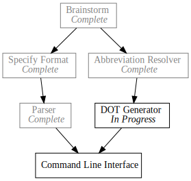

Day9 - Pando Generator
Generating DOT files
2019-02-15

Todo I finished the generator code in Pando for the DOT files. Don't have a lot of time today, so I will just jump right into the changes.
Code generation is much simpler than parsing, but in general a similar approach works well. I build up generators for the individual components of the file format and compose them into larger and larger parts.
Node Definitions
The smallest portion of the file DOT file format is the formatting information for each node in the graph. In our case I have 3 formats, one for each of the task statuses I support.
pub fn generate_task_formatting(task: &Todo) -> String { match task.status { TaskStatus::Completed => format!("<<font color='gray'>{} <br/> <i>Complete</i></font>>, color=\"gray\"", task.identifier), TaskStatus::InProgress => format!("<{} <br/> <i>In Progress</i>>", task.identifier), TaskStatus::Waiting => format!("<{}>", task.identifier) } }
I use the format! macro to provide the unchanging structure, and fill in the
name for each of the status options. I then wrap the formatting into a full
statement like so:
pub fn generate_task_definition(task: &Todo) -> String { format!("{}[label={}];", generate_identifier_variable(&task.identifier), generate_task_formatting(task)) }
Each node definition has an identifier and the formatting. I create the identifier by removing the spaces from the task name.
pub fn generate_identifier_variable(identifier: &String) -> String { identifier.replace(" ", "") }
Note even though this is a very small method, I still pulled it out in case the identifier variable needed to change for whatever reason. By pulling this code into it's own section I am able to change all of the instances in one place.
Finally we can build the entire definition list like so:
pub fn generate_definitions(tasks: &Vec<Todo>) -> String { let definition_entries: Vec<String> = tasks .iter() .map(generate_task_definition) .collect(); definition_entries.join("\n ") }
I needed to use an intermediate variable with a type declaration so that
collect would know what type to collect into. Then the job becomes joining the
lines together and adding some indentation for cleanliness.
Dependencies
Most of the hard work was finished yesterday with the abbreviation resolution. All that is left is to simply render the data structure out. I start with a utility for rendering a list of dependencies with optional braces if there are more than one.
pub fn generate_dependency_list(deps: Vec<String>) -> Option<String> { let dep_variables: Vec<String> = deps .iter() .map(generate_identifier_variable) .collect(); match dep_variables.len() { 0 => None, 1 => Some(dep_variables.first().unwrap().to_string()), _ => Some(format!("{{ {} }}", dep_variables.join(" "))) } }
Again, I had to use an intermediate variable to help collect along. I also
convert each of the identifier strings in the input list to variable formats. A
simple match on the length of the input list does the trick and I use an option
to communicate back up the call stack when to write the line or not.
pub fn generate_dependencies(tasks: &Vec<Todo>) -> Option<String> { let dependent_task_lookup = resolve_dependent_tasks(&tasks)?; let entries: Vec<String> = tasks.iter().filter_map(|task| { let dependent_tasks = dependent_task_lookup[&task.identifier].clone(); let task_variable = generate_identifier_variable(&task.identifier); generate_dependency_list(dependent_tasks) .map(|deps| format!("{} -> {};", task_variable, deps)) }).collect(); Some(entries.join("\n ")) }
To wrap up the dependencies I build the dependent task lookup from the
abbreviation resolver, and use filter_map to only output the entries with have
dependent tasks. Finally I join the lines similar to the definition generator.
An option is still returned at this point in case the abbreviation resolver finds an error.
Putting it All Together
Connecting each of the pieces is just a matter of writing the surrounding goo for the DOT format, and filling in the definitions and dependencies.
pub fn generate_dot_file(tasks: Vec<Todo>) -> Option<String> { let definitions = generate_definitions(&tasks); let dependencies = generate_dependencies(&tasks)?; Some(format!( "digraph {{ node [shape=record, splines=\"curve\"]; {} {} }}", definitions, dependencies)) }
As shown by the test, the code works as expected and generate the DOT format outlined in day4.
#[test] fn generator_dot_file_works() { let generated = generate_dot_file(vec![ Todo::new(TaskStatus::Completed, "Brainstorm", vec![]), Todo::new(TaskStatus::InProgress, "Specify Format", vec!["B"]), Todo::new(TaskStatus::Waiting, "Implement Parser", vec!["SF"]), Todo::new(TaskStatus::Waiting, "DOT Generator", vec!["B"]), Todo::new(TaskStatus::Waiting, "Command Line", vec!["IP", "DG"]) ]); let expected = Some("digraph { node [shape=record, splines=\"curve\"]; Brainstorm[label=<<font color='gray'>Brainstorm <br/> <i>Complete</i></font>>, color=\"gray\"]; SpecifyFormat[label=<Specify Format <br/> <i>In Progress</i>>]; ImplementParser[label=<Implement Parser>]; DOTGenerator[label=<DOT Generator>]; CommandLine[label=<Command Line>]; Brainstorm -> { SpecifyFormat DOTGenerator }; SpecifyFormat -> ImplementParser; ImplementParser -> CommandLine; DOTGenerator -> CommandLine; }".to_string()); assert_eq!(generated, expected); }
Using format! for code generation greatly simplifies things and makes the code
structure very intuitive. I did find myself wishing for a more full featured
string interpolation feature, but this worked in a pinch.
All that's left for Pando V1 is to connect all of the pieces and build a command line interface. Almost there!
Till tomorrow,
Keith